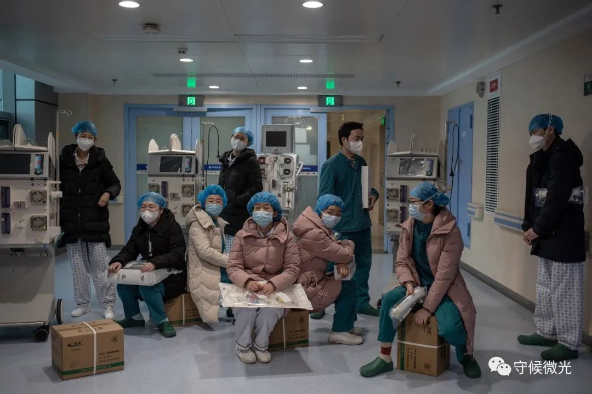
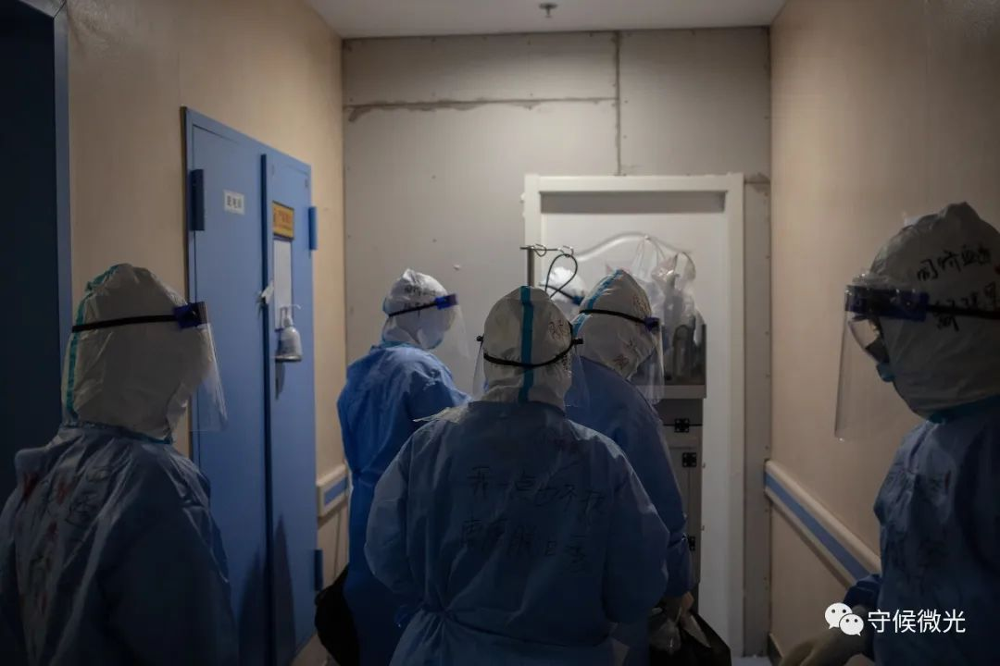
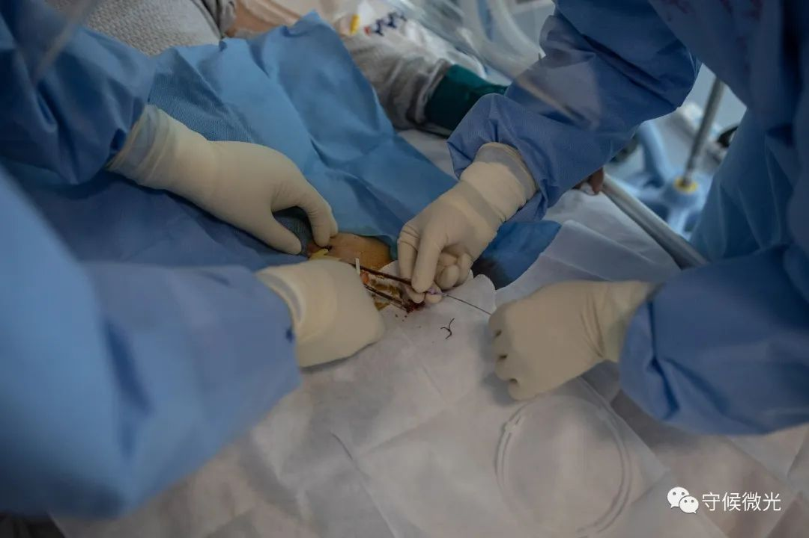
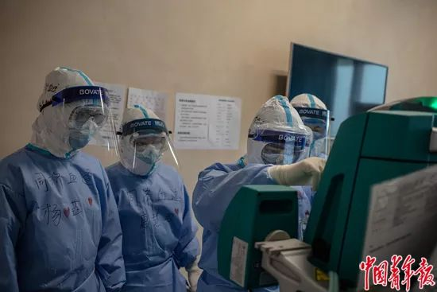
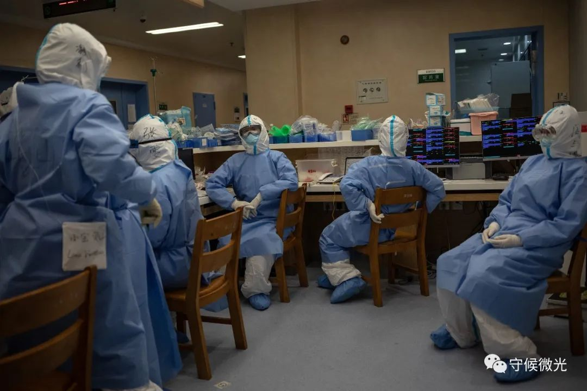
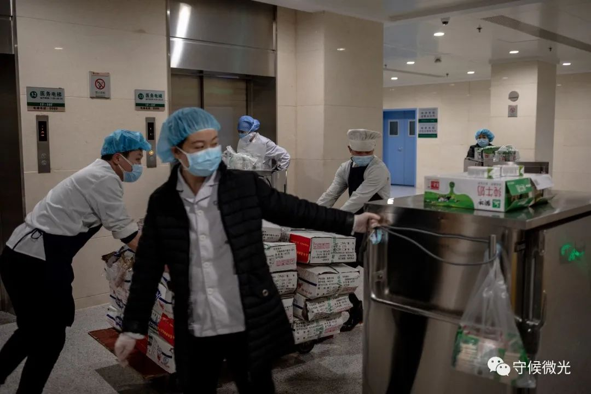
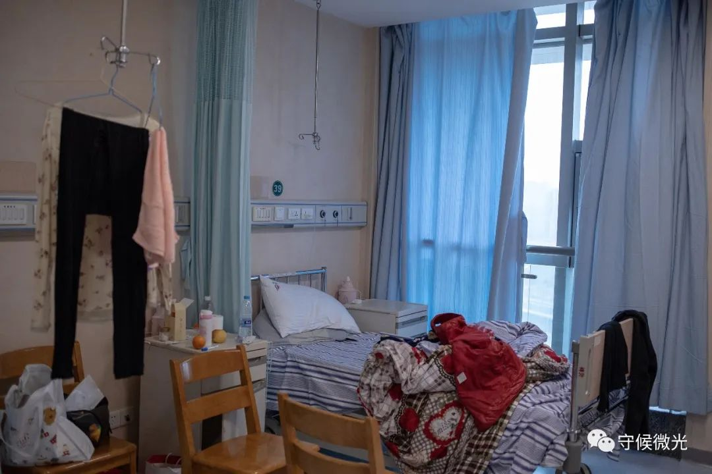
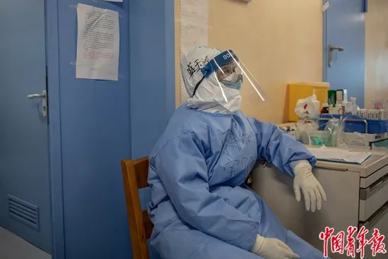

口述实录 | 那些非新冠肺炎的病患也在默默承受着煎熬……
原文链接 备份链接 作为一名医生，我十分清楚在每一个新冠肺炎患者背后，都有一个备受煎熬的家庭，这个坎能不能过去，需要大家一起扛。而随着武汉封城时间越来越长，一些非新冠肺炎的病患，同样也在默默承受着煎熬。 口述 | 郑 华 整理 | …

2月26日，湖北省武汉市同济医院光谷院区，血液净化中心的护士们在等待即将送到的援助物资。这支由20多名专科护理人员组成的“护肾小队”，负责为重症及危重症新冠肺炎患者做血液净化，清除体内细胞因子风暴。中⻘报·中青网记者 李隽辉/摄
中青报·中青网记者 李隽辉摄影报道
从除夕那天晚上开始，武汉同济医院血液净化中心护士长鄢建军和他的团队就一直没有休息过，已有一个多月了。
2月9日，武汉同济医院光谷院区被征用为新冠肺炎重症救治医院。两天多的时间，这里迅速收满了800余名重症和危重症患者。征用当天，鄢建军带着护士们为100多个病人做完透析，并将他们转移回本部院区，已经是半夜12点了。
两天后，血液净化中心的40余名护士一分为二，其中一半“最年轻、最能扛事儿”的护士重新回到光谷院区，组成“护肾小队”，开始为新冠肺炎患者做透析。这些病人都是两周前的“存量”，那时“应收尽收”的政策还没出台，不少病人因为核酸检测的假阴性耽误了治疗时机，在病情加重后才被送进医院。
“护肾小队”的工作首先是筛查合并有肾病损害的病人，进行早期干预，避免出现肾功能损伤；其次是对炎症细胞因子进行筛查。他们发现，很多患者有“细胞因子风暴”的风险。有基础疾病的病人，在“细胞因子风暴”的作用下会发生多器官衰竭，从而可能导致死亡。血液净化技术可以通过清除炎症因子，达到保护脏器、挽救生命的目的。国家卫健委3月3日发布的《新型冠状病毒肺炎诊疗方案（试行第七版）》明确提出，对重型、危重型患者存在细胞因子风暴的，增加“血液净化治疗”。
 2月26日，武汉同济医院光谷院区，血液净化中心护士冯佰仟、万妞、李继明（左至右）在上午的交班例会中。所有护士每天早上8点都要打卡，并报告身体状况。中⻘报·中青网记者 李隽辉/摄
2月26日，武汉同济医院光谷院区，血液净化中心护士冯佰仟、万妞、李继明（左至右）在上午的交班例会中。所有护士每天早上8点都要打卡，并报告身体状况。中⻘报·中青网记者 李隽辉/摄

2月26日，湖北省武汉市同济医院光谷院区，在进入ICU病房前，血液净化中心的护士们互相帮助，穿上防护服。中⻘报·中青网记者 李隽辉/摄

2月26日，武汉同济医院光谷院区，ICU病房内的监控屏幕。 中⻘报·中青网记者 李隽辉/摄
以目前小队的人员配置，一天为10名患者做透析是常态，也是满格的工作状态。进入ICU后，护士们先要调试血液净化机，医生们则开始为病人插导管，这些工作在身着两三层防护服的情况下，变得艰难异常，原本半小时就可以完成的工作要做一个小时。一名病人使用血液净化机的时间是8-10个小时，而医护人员防护服的使用时限是6小时，所以需要两拨儿护士接力才能完成1个病人的血液净化，有的护士甚至一天要进3次ICU。
ICU病房是红区中的红区，房间中病毒气溶胶浓度非常高，进行近距离的操作时需要二级甚至是三级防护（三级为最高防护），防护服如果有一点点漏气，病毒就可能被吸入。这也是高度缺氧的状态，他们每次从ICU出来时，全身上下都会被汗水湿透。
疫情初期，需要常规透析的病人每个星期仍要去医院两三次，而透析室是人员聚集的地方，传染风险很大。透析病人多半合并有基础疾病，一旦感染，死亡率极高。操作透析的医护人员同样面临着极大的风险。
不断有医护人员感染、确诊的消息，会对一线护士的心理产生影响。“说实话，我们都很怕。但血液透析治疗是挽救病人生命的最后手段，做了，病人可能活，但不做就死了。” 鄢建军说。
“封城”初期，很多物资没来得及运进来，隔离衣用完了，医生护士只能穿工作服甚至是病人的病号服工作，直到正月十五之后情况才慢慢好转。也就是在这期间，武汉市一批批医院被征用，常规透析病人们没有地方透析。他们一旦发烧，原本可以去透析的医院不允许接待，只能转到定点医院排查。“排查期间因为没有做透析，不少病人没有挺过去。”鄢建军说。后来，透析病人有了定点医院，加上外省医疗队的进入，情况才有了好转。
同济医院肾内科副教授何凡介绍，一开始，光谷院区的各援助医疗队对应用血液净化技术治疗新冠肺炎患者持保守态度。一次，“护肾小队”为一名74岁的老人完成3次血液净化后，原本呼吸衰竭、已经进入昏迷状态的老人逐渐开始好转，超出正常水平30多倍的炎症因子回到常规范围内。一星期后，老人重症转轻后转院。从这以后，这种治疗方式开始为各医疗队所接受。在随后的两周内，34名患者接受了近百人次血液净化，其中10人已经出院或转至轻症医院。
2月26日，武汉同济医院光谷院区，血液净化中心的护士们准备进入病房。他们要推着血液净化机，穿过3道门，才能从清洁区进入污染区。中⻘报·中青网记者 李隽辉/摄

2月26日，武汉同济医院光谷院区，ICU病房内，护士们在调试血液净化机。这些工作在身着两三层防护的情况下，变得艰难异常，原本半小时就可以完成的工作要做一个小时。中⻘报·中青网记者 李隽辉/摄
 2月26日，武汉同济医院光谷院区，ICU病房内，“护肾小队”与上海华山医院医疗队的医护人员一起，观察一名新冠肺炎患者在血液净化过程中的体征变化。中⻘报·中青网记者 李隽辉/摄
2月26日，武汉同济医院光谷院区，ICU病房内，“护肾小队”与上海华山医院医疗队的医护人员一起，观察一名新冠肺炎患者在血液净化过程中的体征变化。中⻘报·中青网记者 李隽辉/摄
2月26日，武汉同济医院光谷院区，ICU病房内，“护肾小队”为一名病人做股静脉置管，这是为患者进行血液净化的前期工作。中⻘报·中青网记者 李隽辉/摄

2月26日，武汉同济医院光谷院区，ICU病房内，护士长鄢建军（右二）在帮助调试血液净化机。中⻘报·中青网记者 李隽辉/摄

2月26日，武汉同济医院光谷院区，护士们在ICU病房内的护士台交流。中⻘报·中青网记者 李隽辉/摄

2月26日，武汉同济医院光谷院区，ICU病房内，郭水明医生在治疗间隙休息。中⻘报·中青网记者 李隽辉/摄
 2月26日，武汉同济医院光谷院区，准备进病房前，护士们集中在清洁区用餐。疫情暴发后，他们中不少人住在医院病房改造的双人间里，很久没有回家了。中⻘报·中青网记者 李隽辉/摄
2月26日，武汉同济医院光谷院区，准备进病房前，护士们集中在清洁区用餐。疫情暴发后，他们中不少人住在医院病房改造的双人间里，很久没有回家了。中⻘报·中青网记者 李隽辉/摄
2月26日，武汉同济医院光谷院区，后勤保障人员在搬运物资。中⻘报·中青网记者 李隽辉/摄

2月26日，湖北省武汉市同济医院光谷院区，为了方便一线护士工作，整层的病房都被改造成了临时“宿舍”。中⻘报·中青网记者 李隽辉/摄
 2月26日 ，武汉同济医院光谷院区，血液净化中心护士万妞靠在走廊偷偷抹眼泪，她和1岁多的孩子已经有40多天没见面了。中⻘报·中青网记者 李隽辉/摄
2月26日 ，武汉同济医院光谷院区，血液净化中心护士万妞靠在走廊偷偷抹眼泪，她和1岁多的孩子已经有40多天没见面了。中⻘报·中青网记者 李隽辉/摄
国务院联防联控机制2月29日新闻发布会的数据显示，国家援派湖北、武汉的医疗队中，一共派出5500余名重症专业的护士，约占派驻护士总人数的21%，重症专业的护士占重症医务人员总数的3/4。医疗队多以呼吸科、感染科和重症医学科的医生为主，肾科的医生和护士很少。
需要血液净化的患者都是危重症，细胞因子风暴出现的几率很高，需要提供精细化的护理。专人专守式的护理对人力资源消耗比较大，这也导致现在武汉血液透析的专科护士紧缺。
“不是不想换，是没人换。”鄢建军说。在他看来，现在是最吃劲的时期，如果能够把这些存量的病例消化掉，外面没有确诊的病人，也没有人再转重症，那就可以缓一口气了。“现在就像打阻击战一样，每个人都很疲惫，甚至还有因感染减员的问题，但是阵地一定要守住，不能丢。”他说。何凡也呼吁，希望能有血液净化科的护士来武汉支援他们，“毕竟已经超负荷工作很久了”。
 2月26日，湖北省武汉市同济医院光谷院区，ICU病房内，一名护士坐在走廊尽头的椅子上睡着了。中⻘报·中青网记者 李隽辉/摄
2月26日，湖北省武汉市同济医院光谷院区，ICU病房内，一名护士坐在走廊尽头的椅子上睡着了。中⻘报·中青网记者 李隽辉/摄

2月26日，武汉同济医院光谷院区，ICU病房内，上海华山医院医疗队的一名护士在在休息。该医疗队 中的6名血液净化科护士接管了ECMO设备，配合“护肾小队”治疗。中⻘报·中青网记者 李隽辉/摄

2月26日，武汉同济医院光谷院区，ICU病房内，写着“加油”的橡胶手套。中⻘报·中青网记者 李隽辉/摄
中国青年报·中国青年网出品
微信编辑 | 陈轶男

觉得好看请点这里
原文链接 备份链接 作为一名医生，我十分清楚在每一个新冠肺炎患者背后，都有一个备受煎熬的家庭，这个坎能不能过去，需要大家一起扛。而随着武汉封城时间越来越长，一些非新冠肺炎的病患，同样也在默默承受着煎熬。 口述 | 郑 华 整理 | …
原文链接 备份链接 情况在一天天的好起来，从各种细微处都能感受到。 首先是能买到的食物，渐渐丰富起来，虽然价格不便宜，但这种当头，还是不要苛求了。在终于买到白菜之后，我豪绰的做了白菜包子，然后一口气吃了三个。食堂包子那么大的包子啊，我年轻 …
原文链接 备份链接 目前包括中国大陆在内，全球已经有41个国家和地区出现了疫情，其中，韩国是中国大陆之外疫情蔓延最快的国家。 尽管如此，世卫组织不希望在“没有谨慎和清晰地分析事实情况之前”仓促宣布疫情为全球“大流行病” 文 |《财经》特派 …
原文链接 备份链接 目前，伊朗是中东地区确诊病例最多的国家。截至27日，伊朗共确诊245例新冠病毒感染病例，其中26例死亡，25例治愈出院。 全文3274字，阅读约需6.5分钟 截至27日，全球除南极洲外的六大洲都出现了新冠病毒感染病 …
原文链接 备份链接 2020 02 19 星期三 武汉封城第28天 穿过疫城 图/文：艾晓明 今天小区依然限行，昨天到达的女性用品医院自己取走80箱，我们给光谷会展方舱送去的有40箱，还有大约312箱。今天上午先去到工地，和那里的朋友一 …